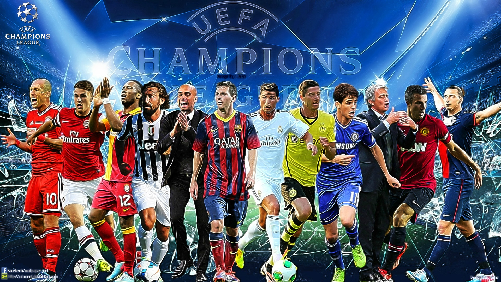
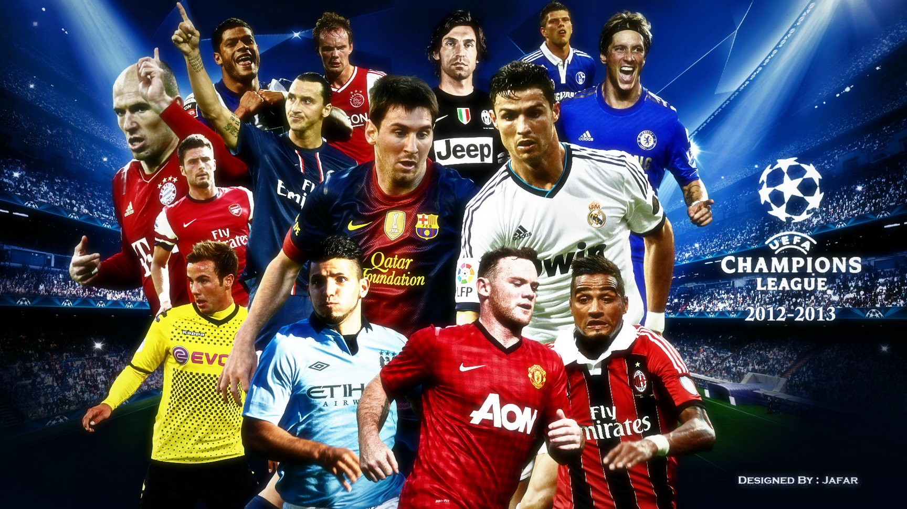

Ce vendredi, l’UEFA a réalisé le tirage au sort des quarts de la Ligue des Champions qui réserveront de gros chocs. Liverpool, qualifié dans ce tour après avoir écarté de son chemin, Leipzig n’a pas du tout été épargné par la main innocente de l’UEFA
Qualifié pour les quarts de finale de Ligue des Champions, le Paris Saint-Germain connaît son adversaire prochain tour de C1. Le club de la capitale a hérité du Bayern Munich, tenant du titre. .
«C’est un bon tirage pour tous les fans de foot». Difficile de donner tort à Kingsley Coman. Le tirage des quarts de finale de la Ligue des champions, effectué vendredi à Nyon (Suisse), offre un remake de la dernière finale, entre «son» Bayern Munich et le Paris Saint-Germain, aux amateurs de ballon rond.
Comme à l’aller, Chelsea s’est imposé sur la plus petite des marges contre les Madrilènes (2-0), mercredi soir à Stamford Bridge en 8ede finale retour de la Ligue des championsUne.Qualification amplement méritée ! En battant de nouveau l’Atlético Madrid ce mercredi (2-0), Chelsea file en quarts de finale de la Ligue des champions, trois semaines après son succès au match aller contre les Madrilènes (1-0). Les Blues n’avaient plus atteint les quarts de finale de C1 depuis 2014.